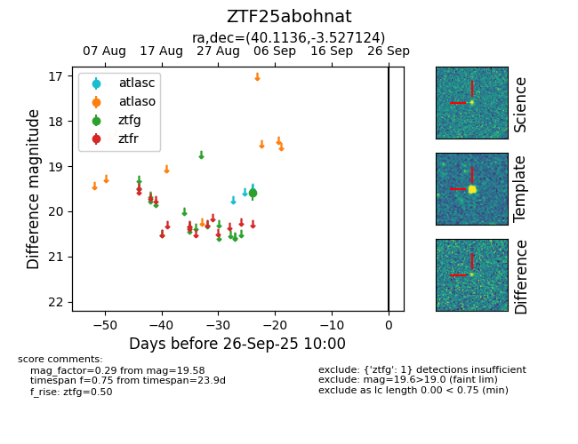

FINK: ZTF25abohnat
Lasair: ZTF25abohnat
ALeRCE: ZTF25abohnat
ZTF25abohnat (ztf,fink)
equatorial (ra, dec) = (40.1136,-3.52712)
galactic (l, b) = (175.5015,-54.85909)

last ztfg=19.58
1 ztfg detections